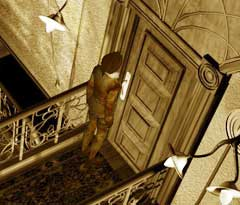
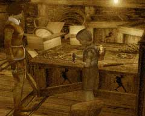

|
カラクリ人形は・・・
ボラルバーグおじさんが出勤してくれれば、こっちのものである。後は、ハンスのいる元へ駆けつけ、夢の世界から引っ張り出すだけだ。・ハンスが閉じこめられている部屋の鍵を手に入れる ・ハンスに話しかける 夢の世界であなたがやらねばならないことは、残り少ない。

・ハンスがこの部屋の奥にいることは、色々な人の説明や状況などから想像が付くだろう。 ・では、鍵はどこにあるだろうか? ・時を動かし、ボラルバーグを出勤させたあなたはすでに知っているはずだ。 ・鍵を持っていても、扉が開かない? 野暮なことを聞かないで欲しい。

・ハンスは物作りに夢中である。 ・ハンスはマンモスが好きなのはあなたはよく知っているだろう。 ・あなたはマンモスに関する何かを持っているはずだ。
| << 前へ |
|